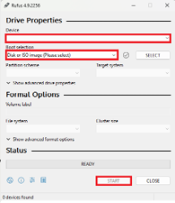
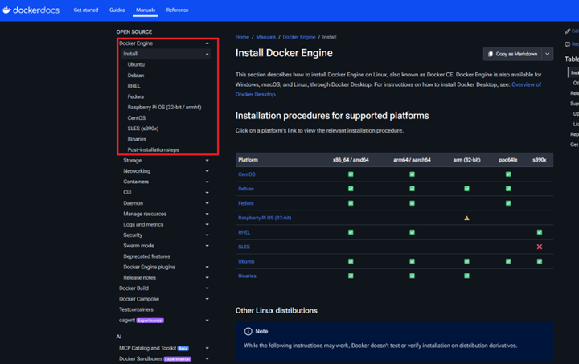
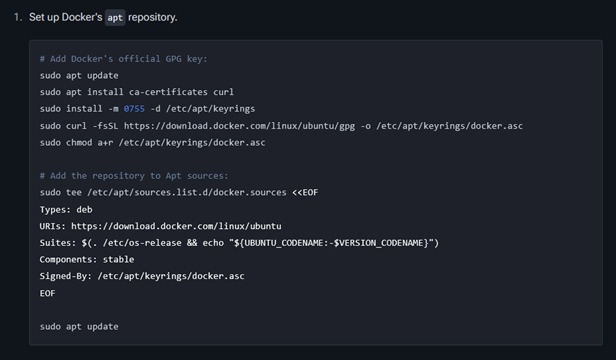
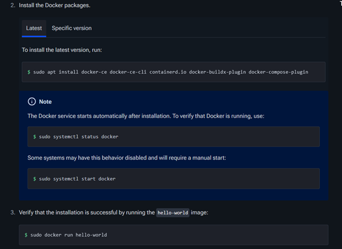
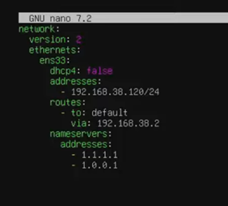
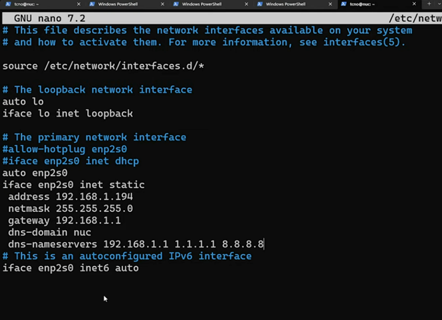

IT Fundamentals Handbook
Hypervisors
Download test2.htmlProxmox
Video Tutorial: https://www.youtube.com/watch?v=_u8qTN3cCnQ
Visit https://www.proxmox.com/en/ go to downloads page and download the "Virtual Environment" ISO.
Next you need a boot loader to properly load the ISO onto a flash drive. I prefer Rufus: https://rufus.ie/en/
Select flash drive device and ISO image and start.

Rufus 49.2256 Interface
Once image is finished…
- Plug ethernet into soon to be Hypervisor Machine.
- Attach flasher drive into Hypervisor Machine.
- Boot to bios.
- Change boot option #1 to the flash drive.
- Reboot
- Follow through with installation
- Host name and static IP are of important note
- Once installation finishes. Set machine to the side. You can now log in using the web UI
Log into web server by typing in URL: https://(static IP):8006
Login and select PVE and then Shell.
# I like to install tailscale on the host that way I can remote/connect to into the machine outside of the network.
sudo apt update && sudo apt install -y curl
curl -fsSL https://tailscale.com/install.sh | sh
# This installs the latest version for your OS automatically.
# Start Tailscale service:
sudo tailscale upYou will see an authentication URL: "To authenticate, visit: https://login.tailscale.com/a/xxxxxx"
Copy the URL from SSH output and open it on your local browser.
Log in with your preferred identity provider (Google, GitHub, Microsoft, etc.)
Once authenticated, the machine will appear in your Tailscale admin dashboard.
Check Tailscale status:
tailscale statusOn the left hand side select local(PVE). Here ISO images can be uploaded and container images can be uploaded and downloaded.
Core Services
Tailscale
Connect to your remote server via SSH:
ssh user@your_server_ipEnsure you have sudo privileges on the target machine.
Install Tailscale
Update package list (Debian/Ubuntu):
sudo apt update && sudo apt install -y curlDownload & install Tailscale:
curl -fsSL https://tailscale.com/install.sh | shThis installs the latest version for your OS automatically.
Authenticate Server
Start Tailscale service:
sudo tailscale upYou will see an authentication URL: "To authenticate, visit: https://login.tailscale.com/a/xxxxxx"
Copy the URL from SSH output and open it on your local browser.
- Log in with your preferred identity provider (Google, GitHub, Microsoft, etc.)
- Once authenticated, the machine will appear in your Tailscale admin dashboard.
SSH
Install OpenSSH Server:
sudo apt update
sudo apt upgrade
sudo apt install openssh-server -yVerify it is running:
sudo systemctl status sshAllow through the Firewall:
sudo ufw allow sshKey-Based Authentication
Windows Video: https://www.youtube.com/watch?v=rf1J8XSEiO0
Windows
On your machine in command line:
ssh-keygen -t ed25519Note file save path location!
If you want login username & password enter it. If not just enter enter enter…
On host machine:
mkdir -p ~/.ssh
nano ~/.ssh/authorized_keysPaste contents of .pub file into nano authorized_keys
Ctrl+o (Then Enter to Save)
Ctrl+x (To Exit)sudo nano /etc/ssh/sshd_configSet password authentication to "no". Delete the # in its front.
Ctrl+o
Ctrl+x
sudo systemctl restart sshMac
Mac Guide: https://www.youtube.com/watch?v=vpk_1gldOAE&list=LL&index=2
On your machine in command line:
ssh-keygen -t ed25519Or
ssh-keygen rsa -b 4096Note file save path location!
If you want login username & password enter it. If not just enter enter enter…
On host machine:
scp ~/.ssh/id_rsa.pub user@ipaddress:/home/user/.ssh/name_key.pub
cat ~/.ssh/name_key.pub >> ~/.ssh/authorized_keys
chmod 700 ~/.ssh/
chmod 600 ~/.ssh/*
nano ~/.ssh/authorized_keysPaste contents of .pub file into nano authorized_keys
Ctrl+o
Ctrl+x
sudo nano /etc/ssh/sshd_configSet password authentication to "no". Delete the # in its front.
Ctrl+o
Ctrl+x
sudo systemctl restart sshDocker
Documentation: https://docs.docker.com/engine/install

# Add Docker's official GPG key:
sudo apt update
sudo apt install ca-certificates curl
sudo install -m 0755 -d /etc/apt/keyrings
sudo curl -fsSL https://download.docker.com/linux/ubuntu/gpg -o /etc/apt/keyrings/docker.asc
sudo chmod a+r /etc/apt/keyrings/docker.asc# Add the repository to Apt sources:
sudo tee /etc/apt/sources.list.d/docker.sources <<EOF
Types: deb
URIs: https://download.docker.com/linux/ubuntu
Suites: $(. /etc/os-release && echo "${UBUNTU_CODENAME:-$VERSION_CODENAME}")
Components: stable
Signed-By: /etc/apt/keyrings/docker.asc
EOF
Install the Docker packages:
sudo apt install docker-ce docker-ce-cli containerd.io docker-buildx-plugin docker-compose-plugin
sudo apt update
sudo systemctl status docker
sudo systemctl start docker
sudo docker run hello-world
CURL
sudo apt install ca-certificates curlHtop
Depending on your Linux distribution, use the corresponding command below:
For Ubuntu, Debian, Linux Mint, or Kali:
sudo apt update
sudo apt install htopFor CentOS, RHEL, or Rocky Linux:
# First, enable the EPEL repository
sudo dnf install epel-release
# Then install htop
sudo dnf install htopFor Fedora:
sudo dnf install htopFor Arch Linux:
sudo pacman -S htopHow to use htop
Once installed, simply type htop in your terminal to launch it.
Quick Cheat Sheet for htop:
Once the interface is open, you can use these keyboard shortcuts to navigate:
- F2 (Setup): Customize the colors, meters, and columns.
- F3 (Search): Find a specific process by name.
- F4 (Filter): Hide everything except processes matching your keyword.
- F5 (Tree): See the parent-child relationship between processes.
- F6 (Sort): Choose to sort by CPU%, Memory%, PID, etc.
- F9 (Kill): Send a signal (like SIGKILL) to stop a process safely.
- F10 (Quit): Exit the program.
Vim/Nano
Installation Steps
For Ubuntu, Debian, or Raspberry Pi OS:
sudo apt update
sudo apt install nano vimFor CentOS, RHEL, or Rocky Linux:
sudo dnf install nano vim-enhancedFor Arch Linux:
sudo pacman -S nano vimHow to use them
Using Nano:
- To open a file:
nano filename.txt - Save: Press Ctrl + O then Enter.
- Exit: Press Ctrl + X.
- Search: Press Ctrl + W.
Using Vim:
- To open a file:
vim filename.txt - Type Text: Press
ito enter Insert Mode. - Stop Typing: Press
Escto return to Normal Mode. - Save & Exit: In Normal Mode, type
:wqand hit Enter. - Exit without Saving: In Normal Mode, type
:q!and hit Enter.
Net-tools
Installation Steps
For Ubuntu, Debian, Linux Mint, or Kali:
sudo apt update
sudo apt install net-toolsFor CentOS, RHEL, Fedora, or Rocky Linux:
sudo dnf install net-toolsFor Arch Linux:
sudo pacman -S net-toolsWhat's inside net-tools
| Command | What it does | Modern Replacement (iproute2) |
|---|---|---|
ifconfig |
View/Configure network interfaces | ip addr |
netstat -tuln |
See active ports and connections | ss -tuln |
route -n |
View the routing table | ip route |
arp -a |
View the ARP table (IP-to-MAC mapping) | ip neigh |
Quick Examples
Simply type ifconfig. You'll see your hardware address (MAC), your local IP (inet), and data packet statistics
sudo netstat -plnt. This shows which programs are listening on which ports (e.g., port 80 for HTTP)
route -n
Samba
Step 1: Install Samba
For Ubuntu/Debian:
sudo apt update
sudo apt install sambaStep 2: Create the Shared Directory
sudo mkdir -p /samba/public
sudo chmod -R 0777 /samba/public
sudo chown -R nobody:nogroup /samba/publicStep 3: Configure the Samba Share
sudo cp /etc/samba/smb.conf /etc/samba/smb.conf.bak
sudo nano /etc/samba/smb.confAdd your share details at the bottom:
[PublicShare]
comment = Samba on Ubuntu
path = /samba/public
browsable = yes
read only = no
guest ok = yes
force user = nobodyStep 4: Setup User Accounts (Optional but Recommended)
If you want a private share instead of a guest one, you must create a Samba password for your user.
sudo smbpasswd -a your_username
sudo smbpasswd -e your_usernameStep 5: Restart Samba
sudo systemctl restart smbd nmbd
sudo ufw allow sambaStep 6: How to Access the Share
From Windows:
- Open File Explorer
- In the address bar, type:
\\<YOUR_STATIC_IP>\PublicShare(e.g.,\\192.168.38.120\PublicShare) - Press Enter
From Linux:
- Open your file manager (Nautilus, Thunar, etc.)
- Select "Other Locations" or "Connect to Server"
- Enter:
smb://192.168.38.120/PublicShare
Summary of smb.conf Parameters
| Parameter | Meaning |
|---|---|
| path | The actual directory on your Linux disk |
| browsable | Whether the share shows up when browsing the network |
| read only | Set to no if you want to be able to upload/delete files |
| guest ok | Set to yes to allow access without a username/password |
Static IP
METHOD 1: UBUNTU NETPLAN
- Find your interface name:
bash
ip -c aOr in some cases:
baship addrLook for names like
eth0orenp0s3 - Note the IP route addresses:
bash
ip route - Locate and edit the config file:
bash
cd /etc/netplan ls sudo nano 50-cloud-init.yaml - Insert the configuration:
"addresses:" will be the static IP. "via" will be the IP route

- Apply changes:
bash
sudo netplan apply ip -c aVerify the change with the last command.
METHOD 2: DEBIAN INTERFACES
- Find interface and route:
bash
ip -c a ip r - Locate the config file:
bash
sudo nano /etc/network/interfaces - Apply configuration:

- Restart service and verify:
bash
sudo systemctl restart networking.service ip -c a
Windows
- Go to Control Panel.
- Select Network and Internet.
- Go to Network and Sharing Center.
- Click on your active connection (e.g., Connections: Ethernet).
- Select Properties.
- Click on Internet Protocol Version 4 (TCP/IPv4) and select Properties.
- Here a static IP, Subnet mask, and Default gateway can be manually set.
DNS
How to put an HTML website online
Useful Links:
Part 1: Hosting Your Website for Free (GitHub Pages)
GitHub Pages is a free service that hosts your static files directly from a GitHub repository.
- Create a GitHub Account: Go to github.com and sign up or log in
- Create a New Repository:
- Click your profile icon (top right) > Your repositories > New
- Give it a name (e.g.,
my-website) and ensure it is set to Public
- Upload Your Files:
- Click "uploading an existing file".
- Drag and drop your
index.html(and any CSS/Images) into the box. - Scroll down and click Commit changes.
- Enable GitHub Pages:
- Go to Settings (top tab) > Pages (left sidebar).
- Under Build and deployment, ensure "Deploy from a branch" is selected and the branch is set to main.
- Click Save. After a minute, you'll see a link like:
https://your-username.github.io/my-website/.
Part 2: Using a Custom Domain (Namecheap)
If you want a professional address (like www.yourname.com), you need to point your domain to GitHub's servers.
- Buy a Domain: Purchase one from Namecheap.
- Configure GitHub:
- In your GitHub Repo Settings > Pages, scroll to Custom domain.
- Type your domain (e.g.,
yourname.com) and click Save.
- Configure Namecheap (DNS Records):
- Log in to Namecheap > Domain List > Manage > Advanced DNS.
- Add four A Records pointing to GitHub's IP addresses:
- 185.199.108.153
- 185.199.109.153
- 185.199.110.153
- 185.199.111.153
- Add a CNAME Record:
- Host:
www - Value:
your-username.github.io
- Host:
- Link Domain in GitHub:
- Return to your GitHub repository Settings > Pages.
- Under Custom domain, type your new domain (e.g.,
example.com) and click Save.
- Enable Security (HTTPS):
- Once the domain is verified, check the Enforce HTTPS box.
Windows Server
Section 1: Initial Server Setup & Role Installation
Before beginning, ensure your server has a static IP address configured (e.g., 192.168.49.5)
- Open Server Manager: Click Manage > Add Roles and Features
- Select Installation Type: Choose Role-based or feature-based installation and select your server
- Select Server Roles: Check the boxes for:
- Active Directory Domain Services (AD DS)
- DHCP Server
- DNS Server
- Note: Click "Add Features" whenever prompted for management tools.
- Install: Follow the prompts and click Install
- Promote to Domain Controller: Once installed, click the notification flag and select Promote this server to a domain controller
- Deployment: Select Add a new forest and enter your Root domain name (e.g.,
mylab.local) - Configuration: Set a Directory Services Restore Mode (DSRM) password and complete the wizard
- The server will automatically reboot after installation.
Section 2: DNS - Configuring Lookup Zones
Active Directory creates Forward Lookup Zones automatically, but you must manually configure the Reverse Lookup Zone.
Configuring Reverse Lookup Zones:
- Open DNS Manager: Go to Tools > DNS
- Create New Zone: Right-click Reverse Lookup Zones > New Zone
- Select Primary Zone and check "Store the zone in Active Directory"
- Replication Scope: Select "To all DNS servers running on domain controllers in this domain"
- Select IPv4 Reverse Lookup Zone
- Network ID: Enter the first three octets of your network (e.g.,
192.168.49). - Dynamic Updates: Choose Allow only secure dynamic updates
- Add Pointer (PTR) Record:
- Right-click your new zone > New Pointer (PTR)
- Browse to find your Host (A) record in the Forward Lookup Zone to map the IP to the Hostname
- Final DNS Tweak: In your Ethernet adapter settings, change the Preferred DNS server from
127.0.0.1to the server's actual static IP (192.168.49.5)
Section 3: DHCP - Post-Install & Scope Configuration
- Post-Deployment: Click the notification flag in Server Manager and select Complete DHCP configuration
- This creates security groups and authorizes the server in Active Directory
- Open DHCP Manager: Go to Tools > DHCP
- Create New Scope: Right-click IPv4 > New Scope
- Name: Provide a name (e.g.,
Scope1) - IP Range: Enter Start (e.g.,
.20) and End (e.g.,.250) addresses - Lease Duration: Set to desired time (e.g.,
8 hours) - Configure DHCP Options:
- Router (Default Gateway): Add your gateway IP (e.g.,
192.168.49.1) - DNS Server: Ensure your Domain Controller IP is listed
- Router (Default Gateway): Add your gateway IP (e.g.,
- Activate: Select Yes, I want to activate this scope now
Section 4: Joining a Client to the Domain
- Client Network Check: On a Windows 10 PC, ensure the adapter is set to "Obtain IP address automatically"
- Run
ipconfig /allto verify it received an IP from the new DHCP server - Join Domain:
- Go to Settings > System > About > Join a domain
- Enter the domain name (
mylab.local) and provide Domain Administrator credentials - Restart the client computer
- Verify: In Server Manager, go to Active Directory Users and Computers > Computers to see the newly joined client listed